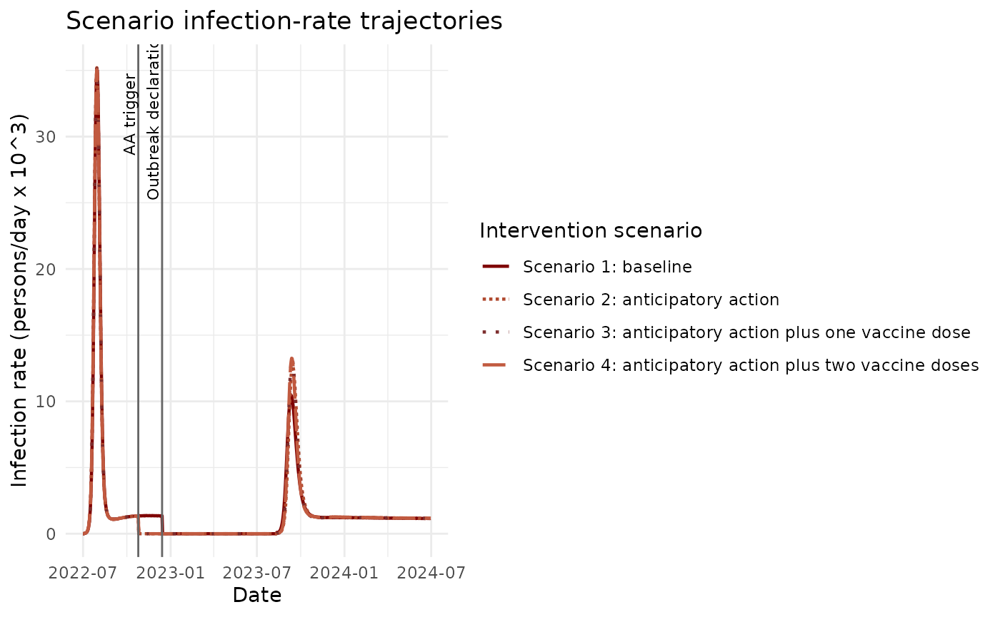
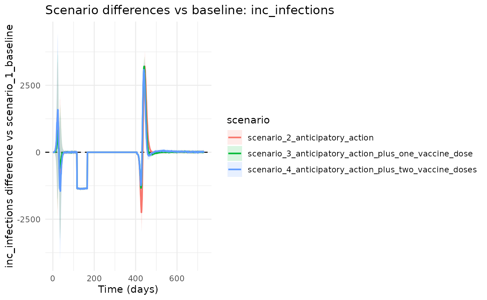
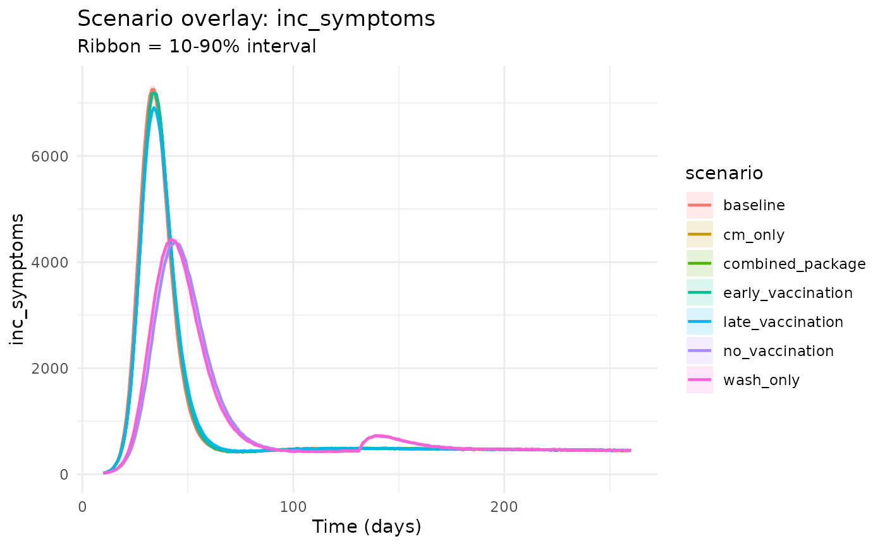

Why This Workflow?
This vignette uses the same shared case-study object as the fitting vignette, then compares four paper-style intervention scenarios in one coherent view:
- Baseline response.
- Anticipatory action.
- Anticipatory action plus one vaccine dose.
- Anticipatory action plus two vaccine doses.
library(chlaa)
library(ggplot2)
library(dplyr)
#>
#> Attaching package: 'dplyr'
#> The following objects are masked from 'package:stats':
#>
#> filter, lag
#> The following objects are masked from 'package:base':
#>
#> intersect, setdiff, setequal, union
case_study <- chlaa_case_study_setup(seed = 42)
pars <- case_study$pars
scenarios <- case_study$scenarios
time <- case_study$time
vapply(scenarios, `[[`, character(1), "name")
#> [1] "scenario_1_baseline"
#> [2] "scenario_2_anticipatory_action"
#> [3] "scenario_3_anticipatory_action_plus_one_vaccine_dose"
#> [4] "scenario_4_anticipatory_action_plus_two_vaccine_doses"1) Run The Scenario Set
runs <- chlaa_run_scenarios(
pars = pars,
scenarios = scenarios,
time = time,
n_particles = 40,
dt = 1,
seed = 1
)2) Plot Infection-Rate Trajectories Together
plot_df <- runs |>
group_by(scenario, time) |>
summarise(infections_per_day = mean(inc_infections), .groups = "drop") |>
mutate(
date = case_study$dates$start_date + time,
infections_k = infections_per_day / 1000
)
label_map <- c(
scenario_1_baseline = "Scenario 1: baseline",
scenario_2_anticipatory_action = "Scenario 2: anticipatory action",
scenario_3_anticipatory_action_plus_one_vaccine_dose = "Scenario 3: anticipatory action plus one vaccine dose",
scenario_4_anticipatory_action_plus_two_vaccine_doses = "Scenario 4: anticipatory action plus two vaccine doses"
)
plot_df$scenario_label <- label_map[plot_df$scenario]
trigger_date <- case_study$dates$trigger_date
declaration_date <- case_study$dates$declaration_date
# Style mirrors the paper-like comparison: all scenarios together,
# intervention timing marked, and infection rates shown in thousands/day.
ggplot(plot_df, aes(x = date, y = infections_k, colour = scenario_label, linetype = scenario_label)) +
geom_line(linewidth = 0.8) +
geom_vline(xintercept = as.numeric(trigger_date), colour = "grey40") +
geom_vline(xintercept = as.numeric(declaration_date), colour = "grey40") +
annotate("text", x = trigger_date, y = max(plot_df$infections_k) * 0.9, label = "AA trigger", angle = 90, vjust = -0.3, size = 3) +
annotate("text", x = declaration_date, y = max(plot_df$infections_k) * 0.9, label = "Outbreak declaration", angle = 90, vjust = -0.3, size = 3) +
scale_colour_manual(values = c(
"Scenario 1: baseline" = "#7f0000",
"Scenario 2: anticipatory action" = "#b04a2f",
"Scenario 3: anticipatory action plus one vaccine dose" = "#7d2d2d",
"Scenario 4: anticipatory action plus two vaccine doses" = "#c15a40"
)) +
scale_linetype_manual(values = c(
"Scenario 1: baseline" = "solid",
"Scenario 2: anticipatory action" = "11",
"Scenario 3: anticipatory action plus one vaccine dose" = "dotted",
"Scenario 4: anticipatory action plus two vaccine doses" = "longdash"
)) +
labs(
x = "Date",
y = "Infection rate (persons/day x 10^3)",
colour = "Intervention scenario",
linetype = "Intervention scenario",
title = "Scenario infection-rate trajectories"
) +
theme_minimal()
#> Warning in scale_x_date(): A <numeric> value was passed to a Date scale.
#> ℹ The value was converted to a <Date> object.
#> A <numeric> value was passed to a Date scale.
#> ℹ The value was converted to a <Date> object.
3) Plot Differences Versus Baseline
chlaa_plot_difference_vs_baseline(
runs,
baseline = "scenario_1_baseline",
var = "inc_infections",
cumulative = FALSE
)
chlaa_plot_difference_vs_baseline(
runs,
baseline = "scenario_1_baseline",
var = "inc_infections",
cumulative = TRUE
)
4) Decision-Facing Summary Tables
summary_tbl <- chlaa_scenario_summary(runs, baseline = "scenario_1_baseline", incidence_var = "inc_infections")
summary_tbl
#> # A tibble: 4 × 8
#> scenario total_cases total_deaths cases_averted deaths_averted peak_incidence
#> <chr> <dbl> <dbl> <dbl> <dbl> <dbl>
#> 1 scenario… 207822. 30161. 0 0 2370.
#> 2 scenario… 186476. 26899. 21347. 3262. 2362
#> 3 scenario… 188618. 27240. 19204. 2921. 2367.
#> 4 scenario… 184478. 26589. 23345. 3572. 2364.
#> # ℹ 2 more variables: time_peak <dbl>, time_to_control <dbl>
cmp <- chlaa_compare_scenarios(
runs,
baseline = "scenario_1_baseline",
include_econ = TRUE,
wtp = 1500
)
cmp
#> # A tibble: 4 × 21
#> scenario infections cases_symptomatic deaths doses orc_treated ctc_treated
#> <chr> <dbl> <dbl> <dbl> <dbl> <dbl> <dbl>
#> 1 scenario_1… 836853. 207822. 30161. 279900 703. 679.
#> 2 scenario_2… 751812. 186476. 26899. 279900 826. 770
#> 3 scenario_3… 759863. 188618. 27240. 279900 826. 762.
#> 4 scenario_4… 743444. 184478. 26589. 179850 822. 764.
#> # ℹ 14 more variables: infections_averted <dbl>, cases_averted <dbl>,
#> # deaths_averted <dbl>, cost <dbl>, dalys <dbl>, cost_diff <dbl>,
#> # dalys_averted <dbl>, icer_cost_per_daly_averted <dbl>,
#> # icer_cost_per_death_averted <dbl>, mean_cost_vax <dbl>,
#> # mean_cost_care <dbl>, mean_cost_wash <dbl>, nmb <dbl>, inmb <dbl>